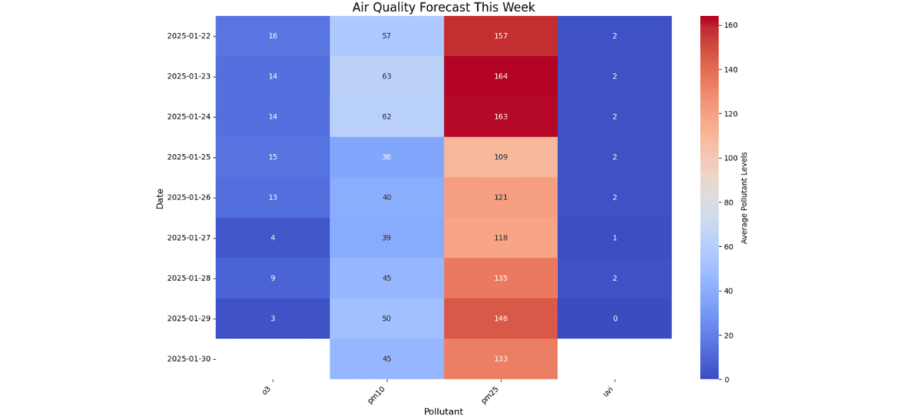
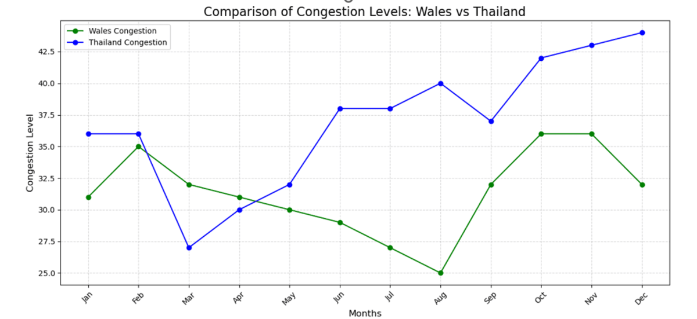

The question
How can multiple data sources help explain seasonal air pollution patterns?
My approach
I brought together air quality, fire alerts, health, population and traffic data, then used visual analysis to explore temporal patterns and geographic comparisons.
Findings & interpretation
Explore air quality patterns
A forecast heatmap compares pollutants over the course of a week in the source data.
Examine fire activity
The project compares PM2.5 and fire alerts to explore their seasonal relationship.
Read comparisons carefully
Cross-location comparisons provide context, with differences in geography, measurement and population requiring care.
Project visualisations





Scope & limitations
These charts reflect the periods and sources used in the project. They are not a live air quality forecast, and correlation does not establish causation.